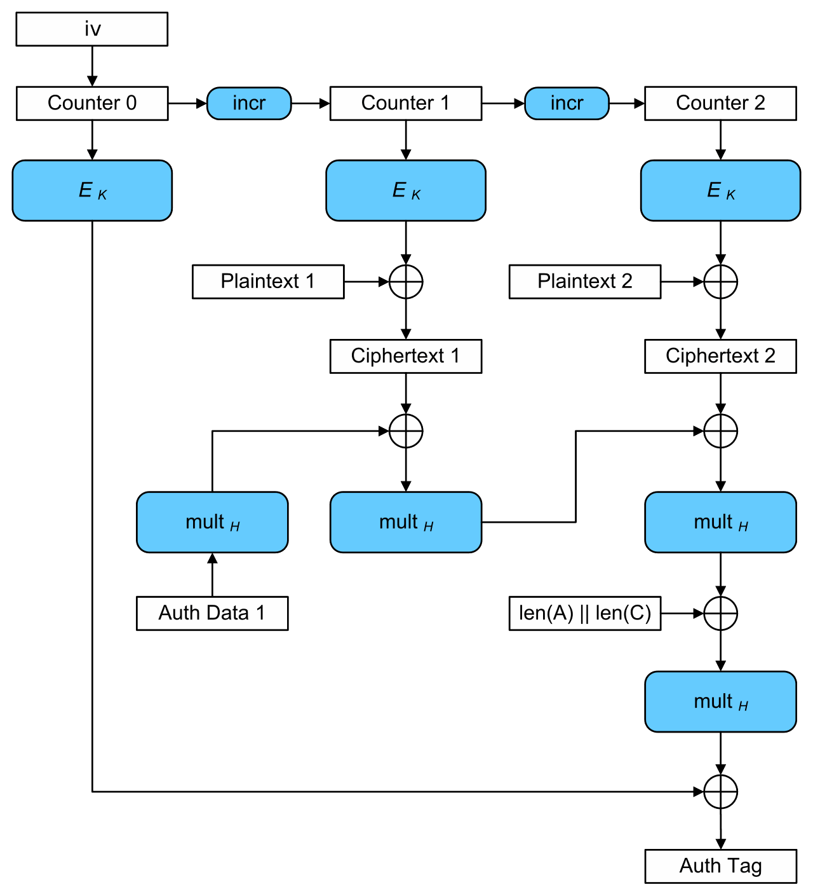

max_queries=150query_delay=0passwords=[bytes(''.join(random.choice(string.ascii_lowercase) \
for_inrange(3)),'UTF-8')for_inrange(3)]flag=open("flag.txt","rb").read()defmenu():print("What you wanna do?")print("1- Set key")print("2- Read flag")print("3- Decrypt text")print("4- Exit")try:returnint(input(">>> "))except:return-1print("Welcome!\n")key_used=0forqueryinrange(max_queries):option=menu()ifoption==1:print("Which key you want to use [0-2]?")try:i=int(input(">>> "))except:i=-1ifi>=0andi<=2:key_used=ielse:print("Please select a valid key.")elifoption==2:print("Password?")passwd=bytes(input(">>> "),'UTF-8')print("Checking...")# Prevent bruteforce attacks...
time.sleep(query_delay)ifpasswd==(passwords[0]+passwords[1]+passwords[2]):print("ACCESS GRANTED: "+flag.decode('UTF-8'))else:print("ACCESS DENIED!")elifoption==3:print("Send your ciphertext ")ct=input(">>> ")print("Decrypting...")# Prevent bruteforce attacks...
time.sleep(query_delay)try:nonce,ciphertext=ct.split(",")nonce=b64decode(nonce)ciphertext=b64decode(ciphertext)except:print("ERROR: Ciphertext has invalid format. \
Must be of the form \"nonce,ciphertext\", where \
nonce and ciphertext are base64 strings.")continuekdf=Scrypt(salt=b'',length=16,n=2**4,r=8,p=1,backend=default_backend())key=kdf.derive(passwords[key_used])try:cipher=AESGCM(key)plaintext=cipher.decrypt(nonce,ciphertext,associated_data=None)except:print("ERROR: Decryption failed. Key was not correct.")continueprint("Decryption successful")elifoption==4:print("Bye!")breakelse:print("Invalid option!")print("You have "+str(max_queries-query)+" trials left...\n")
Recon
Taking a look at the source, we have a few observations
The server generates 3 passwords of 3 lower case ASCII each and uses Scrypt (a Password based key derivation function) on it to derive a 16 byte encryption key from each of the 3 byte passwords, which can be treated as deriving 3 16-byte keys from a set of 263=17576 known randomly generated keys.
It provides us 3 options to work with. Option 1 to set 1 of the 3 unknown randomly generated keys
Option 3 provides as a decryption oracle, allowing us to check whether any arbitrary ciphertext of our choice decrypts successfully. (Why would it fail? more details in How decryption works)
Option 2 is the option we dig, give the server all three passwords (hence keys) correctly, it gives back the flag.
There are 150 queries for all 3 options, which means we have effectively 147 decryption oracles to work with, which indicates we need an average case key recovery in <49 queries.
Thinking Methodology/ Ideas to reject
1. Bruteforcing/ luck
Since the number of keys is quite small, one might be tempted to bruteforce the keys and be optimistic that he/she gets all three keys in 150 attempts.
But the fact that guessing 3 keys consecutively within 150 attempts has probability as low as ≈10−7 which is already out of practical server-bruteforcing further enforced by 10 s delay between each guess taking 25 mins for each bruteforce, its clearly crossed out.
2. The challenge is not about Scrypt
Again, one would be tempted to think that it could be some weakness of Scrypt or the given configuration, or some relation between the derived keys which renders GCM ez. This hypothesis can also countered easily looking at the amount of stuff going inside Scrypt :P
3. Famous attacks on AES-GCM
Again, someone sees AESGCM, they get cryptopals set 8 flashbacks.
Key recovery attacks on repeated nonces
- Again this is possible if the server encrypts stuff, not check its decryption. What the attacker recovers is E(0,K) not the key itself, but since keyspace is small, they could recover it through. Although again, this is definitely not the challenge.
Key recovery attacks on truncated mac
- Clearly, I cant see any sort of truncation. So its out.
Possible approach
The only information we can extract from the oracle is whether the provided ciphertext forms the given tag under the key of the server. How would this help us reduce the number of queries required from 263 to say 50. If it was possible to get it in one shot, the challenge authors would not give a slack of 50 :P
How about there exists a (ciphertext, tag) which decrypts successfully for more than one key?
This would reduce the number of queries by half! We will just need to keep on asking ciphertexts for a 2 pair till the key of server happens to lie in that pair.
That’s all, if we can get a (ciphertext, tag) which is valid for n keys, we can reduce the search to a binary search, requiring log2(263)≈14.1=15 queries at max making 45 queries in total. Then again why 150 and not 50?
More on it later…
How decryption works
This little detour is for the people who may be confused about Authenticated Encryption with Associated Data, and why would an arbitrary decryption of some ciphertext would fail under a given key as opposed to some other mode of AES say CBC.
So the whole idea here is that the ciphertext will comprise of three parts
The encrypted payload i.e the data we wish to communicate
Associated un-encrypted data which contains any additional metadata which needs to be preserved against any sort of tempering.
Tag which is essentially an attempt of proof that the given ciphertext was encrypted by someone who holds the secret key and the payload and additional associated data has not been tempered with.
Whenever the server receives a ciphertext to decrypt, it will first try to verify that the received tag is actually corresponding to the received ciphertext encrypted with the secret key.
If the computation of tag on the ciphertext fails, the server would reject the proposal to decrypt the message.
How AES-GCM works?
AES-GCM is, put simply, an authentication mechanism built upon AES in CTR mode (a stream cipher not necessary for our discussion), such that encrypted blocks of the ciphertext, additional authentication data, and lengths of those two put together in a GCM mac. This is whats all we will need to consider.
Here comes the mandatory picture from Wikipedia. Just follow the components used in the Auth tag generation.

GCM is simply a polynomial (in GF(2128)) constructed using the blocks of authentication data, ciphertext, and two additional blocks, one constructed using the lengths of data and ciphertext and one using the encryption of 96 bit nonce N appended with 31 bits of 0 and a single bit 1. i.e. s=E(N∣∣0311,K)
This polynomial is evaluated at h=E(0,K) to compute the Auth tagT=((((((h∗A0)⊕A1)∗h...⊕Am)∗h⊕C0)∗h...⊕Cn−1)∗h⊕L)∗h⊕s
Since there’s no additional data in the challenge, we get
T=((((h∗C0)⊕C1)∗h...⊕Cn−1)∗h⊕L)∗h⊕s
or
T=C0∗hn+1⊕C1∗hn+1...⊕Cn−1∗h2⊕L∗h⊕s
Attack
Continuing and exploring the idea above one would come across a recent paper titled Partitioning Oracle Attack and what’s cherry on the top is that a quick CTRL+F for github in the paper reveals the POC demo of the same making it a lot easier to implement.
Construction
Continuing from the expression of tag, the terms dependent on key for calculation of tag are h, s only.
Now that we have all the required equations set up, we can find C0,C1…,Cn−1 through lagrange interpolation in O(n2) time and O(n) space.
Performance considerations
Theoretically 15 searches would be enough to find the key, but it would require a multicollision for ~8000 keys.
What we can do is to first check for a few groups of smaller sizes, then proceeding with binary search on a given group.
If we form groups of size k, the total number of calls should be roughly (for worst case number of calls)
17576/k+⌈log2k⌉=49⟹k≈367
Time taken to find a multicollision for k=367 keys,
It takes around 4 seconds on an i9 processor. For the binary search part the times for computation
take quadratically shorter duration, adding to roughly 1.5s for 9 calls.
Overall it should take average case (10+4)∗(17576/367)∗1/2+9∗10+1.5≈426s≈7mins to find a key and worst case to around 760s ~ 12.7 minutes
Average case time to solve the challenge would be around 21 minutes and worst case to around 38 minutes :(
importrandomimportstringimporttimefrombase64importb64encode,b64decodefromcryptography.hazmat.backendsimportdefault_backendfromcryptography.hazmat.primitives.ciphers.aeadimportAESGCMfromcryptography.hazmat.primitives.kdf.scryptimportScryptfromCrypto.CipherimportAESfromitertoolsimportproductfrombitstringimportBitArray,Bitsimportpwnderived_keys=[]# keys derived from scrypt of password
rev_keys={}# holds mapping from derived key to password
forkinproduct(string.ascii_lowercase,repeat=3):kdf=Scrypt(salt=b'',length=16,n=16,r=8,p=1,backend=default_backend())derived_key=kdf.derive("".join(k).encode())derived_keys.append(derived_key)rev_keys[derived_key]="".join(k)HOST,PORT="pythia.2021.ctfcompetition.com",1337REM=pwn.remote(HOST,PORT)defbytes_to_element(val,field,a):"""Converting a bytes object to an element in `field`"""bits=BitArray(val)result=field.fetch_int(0)foriinrange(len(bits)):ifbits[i]:result+=a**ireturnresultP.<x>=PolynomialRing(GF(2))p=x**128+x**7+x**2+x+1GFghash.<a>=GF(2**128,'x',modulus=p)R=PolynomialRing(GFghash,'x')defmulticollision(keyset,nonce=b'\x00'*12,tag=b'\x01'*16):"""main function to find multicollisions, Tag is kept a constant
and so is nonce for all the key encryptions
x_bf corresponds byte object x transformed to the field element
"""L_bytes=int(len(keyset)*128).to_bytes(16,'big')L_bf=bytes_to_element(L_bytes,GFghash,a)nonce_plus=nonce+bytes([0,0,0,1])tag_bf=bytes_to_element(tag,GFghash,a)pairs=[]forkinkeyset:# compute H
aes=AES.new(k,AES.MODE_ECB)H=aes.encrypt(b'\x00'*16)h_bf=bytes_to_element(H,GFghash,a)s=aes.encrypt(nonce_plus)s_bf=bytes_to_element(s,GFghash,a)# assign (lens * H) + s + T to b
b=(L_bf*h_bf)+s_bf+tag_bf# get pair (H, b*(H^-2))
y=b*h_bf**-2pairs.append((h_bf,y))# compute Lagrange interpolation
f=R.lagrange_polynomial(pairs)ct=''forcoeffinf.list()[::-1]:ct_pad=''.join(map(str,coeff.polynomial().list()))ct+=Bits(bin=ct_pad.ljust(128,'0'))ct=ct.bytesreturnct+tagdefdecrypt_text(text):REM.sendline(b'3')REM.sendline('A'*16+','+pwn.b64e(text))data=REM.recvuntil(b'Exit\n>>> ')returnb'successful'indatadefsearch(size=367):start_time=time.time()api_count=0foriinrange(0,26**3,size):print("trying range ({},{})".format(i,i+size))api_count+=1ifdecrypt_text(multicollision(derived_keys[i:i+size])):breaklo,hi=i,i+sizewhilelo<=hi:mid=(lo+hi)//2api_count+=1print("trying range ({},{})".format(lo,hi))ifdecrypt_text(multicollision(derived_keys[lo:mid+1])):hi=mid-1else:lo=mid+1ifdecrypt_text(multicollision(derived_keys[lo:lo+1])):keyindex=loelse:keyindex=lo+1password=rev_keys[derived_keys[keyindex]]print("key:{} found in {} calls".format(password,api_count))print("time taken :",time.time()-start_time)returnpasswordREM.recvuntil(b'Exit\n>>>')password=""forkey_indexinrange(3):REM.sendline(b'1')# option1
REM.sendline(str(key_index))REM.recvuntil(b'Exit\n>>>')password+=search()REM.sendline(b'2')REM.sendline(password)print(REM.recvregex(b'CTF{.*}')# CTF{gCm_1s_n0t_v3ry_r0bust_4nd_1_sh0uld_us3_s0m3th1ng_els3_h3r3}